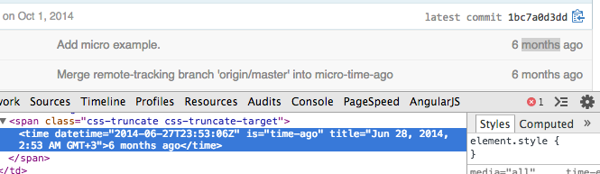

<template>
  <h2>We can <em>prepare</em> today</h2>
  <caption><em>github/time-elements</em></caption>
  

  <!--TODO: arrow-->
  <svg></svg>

  <h3>adopt a <em>modular</em> mentality</h3>

  <h3>use your <em>component</em> system of choice</h3>

  <h3><em>polyfill</em> custom elements (2KB gzipped)</h3>
</template>